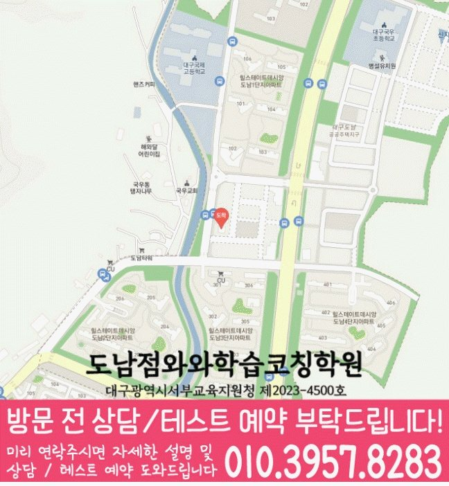

학생이 바로 적용할 공부 방법
막히는 부분을 골라 실행 방법과 기록 양식을 살펴보세요.
도남지구에서 안내하는 지점은 와와학습코칭센터 대구도남점입니다.
자료에 기재된 안내 학년: 영어 초1~초6 · 수학 초1~초6
실제 방문 주소: 대구 북구 도남중앙로7길 20-3 위너프라자 402호 와와학습코칭학원
대구도남점 수업 조건·교육비·공간 사진 확인
대구도남점 선생님 소개에는 「진행 과정 기록」 · 「짧은 설명 녹여 쓰기」 · 「표와 그림 정리」 같은 지도 방향이 담겨 있습니다. 최근 풀이·복습 기록에서 필요한 도움을 골라 질문을 준비해 보세요. 실제 담당 과목과 수업 배정은 상담에서 확인하세요.
수업 안내 이미지

이미지를 누르면 원본 크기로 확대해 작은 글씨를 읽을 수 있습니다. 공통 수업 안내이며, 실제 과목·학년·시간은 지점 정보와 함께 확인해 주세요.
지점·과목 안내
도남지구에서 수업을 알아보는 학생에게 안내하는 지점은 와와학습코칭센터 대구도남점입니다. 지점 위치와 과목별 학년을 먼저 확인해 주세요.
제공 자료에 기재된 학년입니다. 현재 개설 과정·수업 시간·반 편성은 상담에서 확인해 주세요. 안내가 없는 학년은 수업 가능 여부가 확인되지 않았습니다.
와와학습코칭센터 대구도남점
대구 북구 도남중앙로7길 20-3 위너프라자 402호 와와학습코칭학원
주소로 네이버 지도 검색교육지원청 등록번호: 대구광역시서부교육지원청 제2023-4500호
주변 학교 참고: 대구국우초등학교 · 대구도남초등학교. 재학생 수강 여부나 학교별 반 편성을 뜻하지 않습니다.
센터 위치 안내

와와학습코칭센터 대구도남점 주소: 대구 북구 도남중앙로7길 20-3 위너프라자 402호 와와학습코칭학원
지도를 누르면 원본 크기로 확대할 수 있습니다. 네이버 지도에서 주소와 이동 경로 확인 · 상담 대표전화 010-6839-8283
학습 상담 준비
대구도남점의 영어와 수학은 과목별 안내 학년을 각각 확인해야 합니다. 학생의 약점과 학교 일정에 따라 두 과목의 우선순위를 정리해 주세요.
함께 의논할 주제 주간 계획의 실행·영어·수학 개별 진단
단어 읽기와 뜻 이해를 나누고, 짧은 문장을 혼자 읽을 때 막히는 부분을 표시해 보세요. 매일 할 수 있는 복습 분량도 함께 이야기해 주세요.
계산 실수와 문장제 이해의 어려움을 구분해 보세요. 문제에서 구할 것을 말해 보고 식을 적은 과정을 가져오면 시작할 범위를 의논하기 좋습니다.
학교와 일정
지역 참고 학교이며, 재원 여부나 학교별 반 운영을 뜻하지 않습니다. 재학 중인 학교의 교재·시험 범위·하교 시간을 기준으로 상담해 주세요.
자주 묻는 질문
자료에 기재된 학년은 영어 초1~초6, 수학 초1~초6입니다. 현재 개설 과정과 수업 시간은 지점 상담에서 확인해 주세요.
센터별 교습비 자료에서 안내 금액을 확인할 수 있습니다. 희망 과목·학년을 알려 주고 현재 과정의 교습비, 교재비 등 추가 비용, 수업 요일과 시간을 확인해 주세요.
현재 이해도와 학교 과제가 다르므로 두 과목의 분량을 동일하게 정할 필요는 없습니다. 과목별로 끝낼 수 있는 양과 복습 시간을 적어 보고, 함께 수강할 경우의 일정과 과제 조정 방식을 문의해 주세요.
안내받은 수강 과목·학년, 수업 요일·시간, 교습비와 추가 비용을 함께 적어 두세요. 학생이 시작할 학습 범위와 과제량, 다음에 학습 상태를 확인할 시점도 정리하면 계획을 이어 가기 좋습니다.
함께 읽으면 도움이 되는 자료
초등 공부에서 어려운 부분과 다음 준비를 함께 살펴보세요.
막히는 부분을 골라 실행 방법과 기록 양식을 살펴보세요.
학생이 실제로 해 본 결과를 보고 교재의 역할을 정해 보세요.
학생의 공부 기록을 바탕으로 수업과 다음 목표를 비교해 보세요.
학생의 공부와 교재 선택을 돕는 참고 자료입니다. 지점의 개설 과목·학년과 실제 사용 교재는 별도로 확인해 주세요.